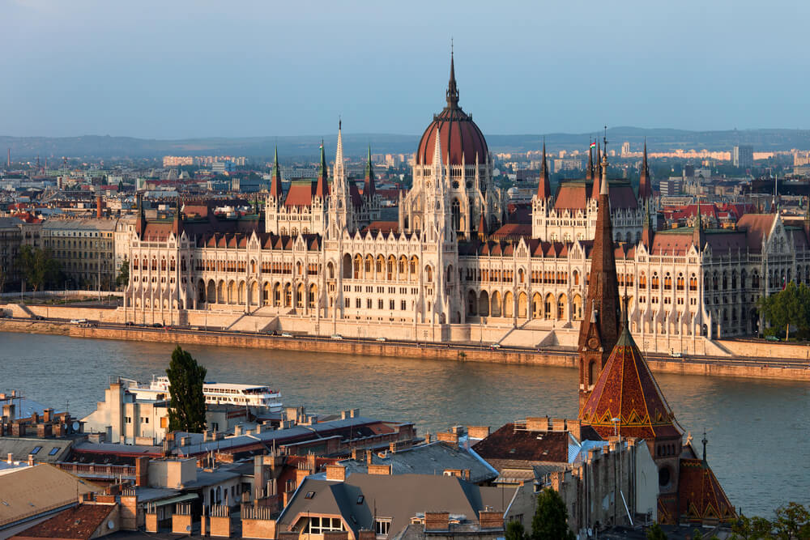

Burada Budapeşte'deki deneyimlerim hakkında kısa bir yazı olacak.
Budapeşte, Macaristan'ın başkenti olup, tarihi ve kültürel zenginlikleriyle dikkat çeker. Şehir, Tuna Nehri'nin iki yakasına yayılmış olup, Buda ve Peşte olmak üzere iki bölüme ayrılır. Buda Kalesi, Parlamento Binası ve Zincirli Köprü gibi önemli yapıları gezebilirsiniz. Ayrıca, termal hamamları ve gece hayatıyla da ünlüdür.
 Ana Sayfa'ya Dön